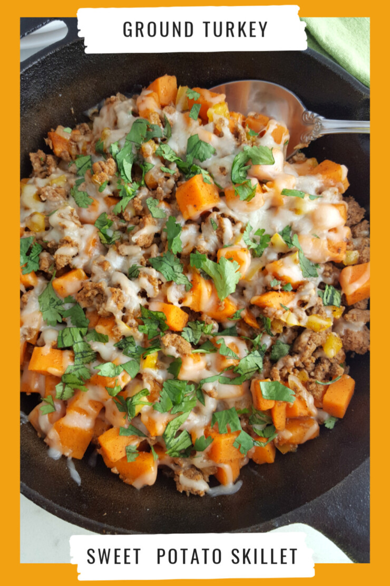

Turkey Sweet Potato Skillet

Description
You don’t have to eat bland boring food to eat healthy and this Ground Turkey Sweet Potato Skillet is proof enough of that!
It’s a simple but delicious combination of healthy ingredients that will fuel your family and have them asking you to make it again.
Ingredients
- 1 package ground turkey
- 1 bag frozen sweet potatoes
- 1 yellow bell pepper
- 1 yellow onion
- 2 tablespoons chili powder
- 2 tablespoons cumin
- 1 tablespoon salt
- 2 cups mozzarella cheese grated
Instructions
- Preheat oven to 375 degrees
- Brown ground turkey in cast iron skillet
- When turkey is almost fully cooked, add in chopped onion and yellow bell pepper
- Add a splash of water and cover to soften veggies
- Add bag of sweet potatoes seasonings, and another splash of water. Stir and cover until potatoes are no longer frozen
- Turn off heat and add mozzarella cheese on top of skillet
- Take the entire cast iron skillet and put it in the oven for about 8 min or until cheese is fully melted